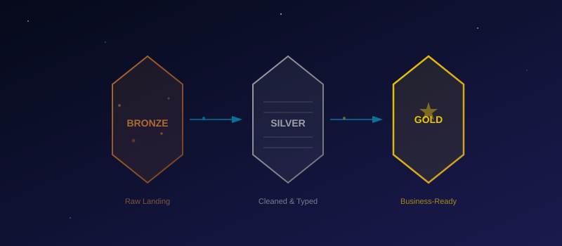

Medallion Lakehouse
Transform raw ingested data into a production-ready Medallion Architecture — building 6 Silver tables and 4 Gold tables using PySpark notebooks in Microsoft Fabric.

What You'll Build
In this module you'll transform raw ingested data into a production-ready Medallion Architecture — the industry-standard pattern for organizing data in a Lakehouse. By the end, you'll have 6 Silver tables (cleaned) and 4 Gold tables (aggregated), all queryable from the SQL Analytics Endpoint.
45–60 minutes
Understanding the Medallion Architecture
The Medallion Architecture organizes your data into three progressive layers of quality:
| Layer | Purpose | Characteristics | ZOSA Example |
|---|---|---|---|
| 🥉 Bronze | Raw landing zone | Schema-on-read, append-only, exact copy of source | asteroids_bronze — raw JSON from NASA API |
| 🥈 Silver | Conformance zone | Cleaned, typed, deduplicated, validated. Schema-on-write | asteroids_silver — parsed dates, cast numerics, no duplicates |
| 🥇 Gold | Delivery zone | Business-ready aggregations and joins. Optimized for consumption | gold_asteroid_risk — hazard scores, risk categories |
All three layers live as Delta tables in the same Lakehouse. No separate storage accounts, no ETL orchestration between zones — just notebooks writing to different tables.
Why Medallion?
- Reprocessing safety — Bronze is your immutable source of truth. If Silver logic changes, just re-run the notebook.
- Separation of concerns — Data engineers own Bronze→Silver; analysts own Silver→Gold.
- Incremental complexity — Each layer adds value without coupling to the others.
Create Your First Notebook
Time to write your first Spark notebook. This is where the real data engineering happens.
Open the ZOSA-Dev workspace in Fabric.
Click + New → Notebook.
Name it: 01-bronze-to-silver
In the notebook toolbar, click Add Lakehouse → select lh_zosa.
You now have a PySpark notebook connected to your Lakehouse. Fabric provides a managed Spark pool — no cluster configuration needed. The spark session object is pre-initialized, and all Lakehouse tables are accessible via spark.read.table("lh_zosa.<table_name>").
Notebook Environment Quick Reference
| Feature | Detail |
|---|---|
| Language | PySpark (Python + Spark) |
| Spark pool | Managed by Fabric — auto-starts, auto-scales |
| Table access | spark.read.table("lh_zosa.<table>") |
| File access | Files/ folder in the Lakehouse |
| Cell execution | Shift+Enter to run current cell |
Bronze → Silver Transformations
Each Bronze table gets its own cell in the notebook. The pattern is consistent:
- Read the Bronze table
- Deduplicate on natural keys
- Cast columns to proper types
- Validate — filter out null keys and invalid values
- Write as a Silver Delta table
3.1 — Asteroids
# Cell 1: Asteroids Bronze → Silver
from pyspark.sql.functions import col, to_date, trim
df = spark.read.table("lh_zosa.asteroids_bronze")
silver_asteroids = (df
.dropDuplicates(["neo_id", "close_approach_date"])
.withColumn("close_approach_date", to_date(col("close_approach_date")))
.withColumn("miss_distance_au", col("miss_distance_au").cast("double"))
.withColumn("miss_distance_km", col("miss_distance_km").cast("double"))
.withColumn("relative_velocity_kmps", col("relative_velocity_kmps").cast("double"))
.withColumn("estimated_diameter_min_km", col("estimated_diameter_min_km").cast("double"))
.withColumn("estimated_diameter_max_km", col("estimated_diameter_max_km").cast("double"))
.withColumn("name", trim(col("name")))
.filter(col("neo_id").isNotNull())
)
silver_asteroids.write.mode("overwrite").format("delta").saveAsTable("lh_zosa.asteroids_silver")
print(f"✅ asteroids_silver: {silver_asteroids.count()} rows")3.2 — Solar Events
# Cell 2: Solar Events Bronze → Silver
from pyspark.sql.functions import col, to_timestamp, trim, upper
df = spark.read.table("lh_zosa.solar_events_bronze")
silver_solar = (df
.dropDuplicates(["event_id"])
.withColumn("event_timestamp", to_timestamp(col("event_timestamp")))
.withColumn("peak_timestamp", to_timestamp(col("peak_timestamp")))
.withColumn("end_timestamp", to_timestamp(col("end_timestamp")))
.withColumn("severity", col("severity").cast("int"))
.withColumn("event_type", trim(upper(col("event_type"))))
.withColumn("latitude", col("latitude").cast("double"))
.withColumn("longitude", col("longitude").cast("double"))
.filter(col("event_id").isNotNull())
)
silver_solar.write.mode("overwrite").format("delta").saveAsTable("lh_zosa.solar_events_silver")
print(f"✅ solar_events_silver: {silver_solar.count()} rows")3.3 — Exoplanets
# Cell 3: Exoplanets Bronze → Silver
from pyspark.sql.functions import col, trim
df = spark.read.table("lh_zosa.exoplanets_bronze")
silver_exoplanets = (df
.dropDuplicates(["planet_name"])
.withColumn("planet_name", trim(col("planet_name")))
.withColumn("discovery_year", col("discovery_year").cast("int"))
.withColumn("orbital_period_days", col("orbital_period_days").cast("double"))
.withColumn("planet_radius_earth", col("planet_radius_earth").cast("double"))
.withColumn("planet_mass_earth", col("planet_mass_earth").cast("double"))
.withColumn("equilibrium_temp_k", col("equilibrium_temp_k").cast("double"))
.withColumn("distance_ly", col("distance_ly").cast("double"))
.filter(col("planet_name").isNotNull())
)
silver_exoplanets.write.mode("overwrite").format("delta").saveAsTable("lh_zosa.exoplanets_silver")
print(f"✅ exoplanets_silver: {silver_exoplanets.count()} rows")3.4 — Missions
# Cell 4: Missions Bronze → Silver
from pyspark.sql.functions import col, to_date, trim, when
df = spark.read.table("lh_zosa.missions_bronze")
valid_statuses = ["Planned", "Active", "Completed", "Cancelled", "On Hold"]
silver_missions = (df
.dropDuplicates(["mission_id"])
.withColumn("mission_name", trim(col("mission_name")))
.withColumn("launch_date", to_date(col("launch_date")))
.withColumn("end_date", to_date(col("end_date")))
.withColumn("budget_usd", col("budget_usd").cast("double"))
.withColumn("crew_size", col("crew_size").cast("int"))
.withColumn("status",
when(col("status").isin(valid_statuses), col("status"))
.otherwise("Unknown"))
.filter(col("mission_id").isNotNull())
)
silver_missions.write.mode("overwrite").format("delta").saveAsTable("lh_zosa.missions_silver")
print(f"✅ missions_silver: {silver_missions.count()} rows")3.5 — Crew
# Cell 5: Crew Bronze → Silver
from pyspark.sql.functions import col, to_date, trim, regexp_extract
df = spark.read.table("lh_zosa.crew_bronze")
silver_crew = (df
.dropDuplicates(["crew_id"])
.withColumn("first_name", trim(col("first_name")))
.withColumn("last_name", trim(col("last_name")))
.withColumn("hire_date", to_date(col("hire_date")))
.withColumn("email", trim(col("email")))
.withColumn("years_experience", col("years_experience").cast("int"))
.filter(col("crew_id").isNotNull())
.filter(col("email").rlike("^[a-zA-Z0-9._%+-]+@[a-zA-Z0-9.-]+\\.[a-zA-Z]{2,}$"))
)
silver_crew.write.mode("overwrite").format("delta").saveAsTable("lh_zosa.crew_silver")
print(f"✅ crew_silver: {silver_crew.count()} rows")3.6 — Telemetry
# Cell 6: Telemetry Bronze → Silver
from pyspark.sql.functions import col, to_timestamp, trim, when
df = spark.read.table("lh_zosa.telemetry_bronze")
valid_statuses = ["Nominal", "Warning", "Critical", "Offline", "Maintenance"]
silver_telemetry = (df
.dropDuplicates(["timestamp", "ground_station_id"])
.withColumn("timestamp", to_timestamp(col("timestamp")))
.withColumn("signal_strength_dbm", col("signal_strength_dbm").cast("double"))
.withColumn("noise_floor_dbm", col("noise_floor_dbm").cast("double"))
.withColumn("temperature_c", col("temperature_c").cast("double"))
.withColumn("humidity_pct", col("humidity_pct").cast("double"))
.withColumn("wind_speed_kmh", col("wind_speed_kmh").cast("double"))
.withColumn("elevation_angle_deg", col("elevation_angle_deg").cast("double"))
.withColumn("ground_station_id", trim(col("ground_station_id")))
.withColumn("status",
when(col("status").isin(valid_statuses), col("status"))
.otherwise("Unknown"))
.filter(col("timestamp").isNotNull())
.filter(col("ground_station_id").isNotNull())
)
silver_telemetry.write.mode("overwrite").format("delta").saveAsTable("lh_zosa.telemetry_silver")
print(f"✅ telemetry_silver: {silver_telemetry.count()} rows")Run each cell sequentially (Shift+Enter). The first cell will take 30–60 seconds as the Spark session starts up. Subsequent cells run much faster.
Silver → Gold Aggregations
Create a new notebook: + New → Notebook → name it 02-silver-to-gold. Attach to lh_zosa the same way.
Gold tables are purpose-built for reporting and analytics. They answer specific business questions.
4.1 — gold_asteroid_risk
Which near-Earth objects pose the greatest risk, and how should we categorize them?
# Cell 1: Asteroid Risk Scoring
from pyspark.sql.functions import col, when, round as spark_round
silver = spark.read.table("lh_zosa.asteroids_silver")
gold_asteroid_risk = (silver
.withColumn("avg_diameter_km",
(col("estimated_diameter_min_km") + col("estimated_diameter_max_km")) / 2)
.withColumn("hazard_score",
spark_round(
(1 / (col("miss_distance_au") + 0.001)) *
col("relative_velocity_kmps") *
col("avg_diameter_km") * 100, 2
))
.withColumn("risk_category",
when(col("hazard_score") > 1000, "Critical")
.when(col("hazard_score") > 100, "High")
.when(col("hazard_score") > 10, "Medium")
.otherwise("Low"))
.select("neo_id", "name", "close_approach_date", "miss_distance_au",
"relative_velocity_kmps", "avg_diameter_km", "is_potentially_hazardous",
"hazard_score", "risk_category")
.orderBy(col("hazard_score").desc())
)
gold_asteroid_risk.write.mode("overwrite").format("delta").saveAsTable("lh_zosa.gold_asteroid_risk")
print(f"✅ gold_asteroid_risk: {gold_asteroid_risk.count()} rows")4.2 — gold_mission_summary
How are missions performing across years, types, and regions?
# Cell 2: Mission Summary Aggregation
from pyspark.sql.functions import (
col, year, count, sum as spark_sum,
round as spark_round, avg as spark_avg
)
silver = spark.read.table("lh_zosa.missions_silver")
gold_mission_summary = (silver
.withColumn("launch_year", year(col("launch_date")))
.groupBy("launch_year", "mission_type", "status", "region")
.agg(
count("*").alias("mission_count"),
spark_round(spark_sum("budget_usd"), 2).alias("total_budget_usd"),
spark_round(spark_avg("budget_usd"), 2).alias("avg_budget_usd"),
spark_sum(col("crew_size")).alias("total_crew")
)
.withColumn("success_rate",
spark_round(
(col("mission_count") /
spark_sum("mission_count").over(
__import__('pyspark.sql', fromlist=['Window']).Window
.partitionBy("launch_year", "mission_type", "region")
)) * 100, 1
))
.orderBy("launch_year", "mission_type")
)
gold_mission_summary.write.mode("overwrite").format("delta").saveAsTable("lh_zosa.gold_mission_summary")
print(f"✅ gold_mission_summary: {gold_mission_summary.count()} rows")If the Window import feels awkward inline, you can split it into two steps — first compute totals, then join back for the rate. Both are valid.
4.3 — gold_solar_activity
What's the trend of solar activity over time, and how severe are the events?
# Cell 3: Solar Activity Timeline
from pyspark.sql.functions import (
col, date_trunc, count, avg as spark_avg,
round as spark_round, max as spark_max,
sum as spark_sum, when
)
silver = spark.read.table("lh_zosa.solar_events_silver")
gold_solar_activity = (silver
.withColumn("event_month", date_trunc("month", col("event_timestamp")))
.groupBy("event_month", "event_type")
.agg(
count("*").alias("event_count"),
spark_round(spark_avg("severity"), 2).alias("avg_severity"),
spark_max("severity").alias("max_severity"),
spark_sum(when(col("severity") >= 4, 1).otherwise(0)).alias("high_severity_count"),
spark_sum(when(col("severity") < 4, 1).otherwise(0)).alias("low_severity_count")
)
.orderBy("event_month", "event_type")
)
gold_solar_activity.write.mode("overwrite").format("delta").saveAsTable("lh_zosa.gold_solar_activity")
print(f"✅ gold_solar_activity: {gold_solar_activity.count()} rows")4.4 — gold_exoplanet_catalog
Which exoplanets are the most Earth-like, and where should ZOSA focus future observations?
# Cell 4: Exoplanet Habitability Catalog
from pyspark.sql.functions import (
col, when, abs as spark_abs, round as spark_round,
row_number
)
from pyspark.sql.window import Window
silver = spark.read.table("lh_zosa.exoplanets_silver")
# Simplified Earth Similarity Index (ESI)
# Based on radius, temperature, and orbital period relative to Earth
# Earth values: radius=1, temp=255K, orbital_period=365.25 days
gold_exoplanet_catalog = (silver
.filter(col("planet_radius_earth").isNotNull())
.filter(col("equilibrium_temp_k").isNotNull())
.withColumn("radius_similarity",
1 - spark_abs(col("planet_radius_earth") - 1) / col("planet_radius_earth"))
.withColumn("temp_similarity",
1 - spark_abs(col("equilibrium_temp_k") - 255) / col("equilibrium_temp_k"))
.withColumn("period_similarity",
when(col("orbital_period_days").isNotNull(),
1 - spark_abs(col("orbital_period_days") - 365.25) / col("orbital_period_days"))
.otherwise(0))
.withColumn("earth_similarity_index",
spark_round(
(col("radius_similarity") + col("temp_similarity") + col("period_similarity")) / 3, 4
))
.withColumn("habitability_zone",
when(
(col("equilibrium_temp_k").between(180, 310)) &
(col("planet_radius_earth").between(0.5, 2.5)),
"Habitable Zone"
).otherwise("Outside HZ"))
.withColumn("rank",
row_number().over(
Window.orderBy(col("earth_similarity_index").desc())
))
.select("rank", "planet_name", "host_star", "discovery_year",
"discovery_method", "distance_ly", "planet_radius_earth",
"planet_mass_earth", "equilibrium_temp_k", "orbital_period_days",
"earth_similarity_index", "habitability_zone")
.orderBy("rank")
)
gold_exoplanet_catalog.write.mode("overwrite").format("delta").saveAsTable("lh_zosa.gold_exoplanet_catalog")
print(f"✅ gold_exoplanet_catalog: {gold_exoplanet_catalog.count()} rows")Incremental Load Pattern
In this lab we use full overwrite (mode("overwrite")) for simplicity. In production, you'd use a watermark-based incremental pattern to process only new data.
How It Works
- Add a
_loaded_attimestamp column when writing Silver tables - Track the last successful watermark (max
_loaded_atvalue) - On subsequent runs, only process rows where the source timestamp exceeds the watermark
Incremental Pattern Example
from pyspark.sql.functions import col, current_timestamp, max as spark_max
# Read the current watermark (last load time)
try:
watermark = (spark.read.table("lh_zosa.asteroids_silver")
.select(spark_max("_loaded_at")).collect()[0][0])
except:
watermark = None # First run — process everything
# Read only new Bronze rows
df = spark.read.table("lh_zosa.asteroids_bronze")
if watermark:
df = df.filter(col("_ingested_at") > watermark)
# Apply Silver transformations...
silver = (df
.dropDuplicates(["neo_id", "close_approach_date"])
# ... (same transformations as before)
.withColumn("_loaded_at", current_timestamp())
)
# Append instead of overwrite
silver.write.mode("append").format("delta").saveAsTable("lh_zosa.asteroids_silver")Stick with mode("overwrite"). The incremental pattern is shown here for reference — you'll use it when you operationalize your pipelines in a real project.
Validate Your Medallion Lakehouse
Open the SQL Analytics Endpoint for your Lakehouse and run this validation query:
-- Medallion Layer Validation
SELECT 'Bronze' AS layer, 'asteroids' AS dataset, COUNT(*) AS rows FROM asteroids_bronze
UNION ALL SELECT 'Bronze', 'solar_events', COUNT(*) FROM solar_events_bronze
UNION ALL SELECT 'Bronze', 'exoplanets', COUNT(*) FROM exoplanets_bronze
UNION ALL SELECT 'Bronze', 'missions', COUNT(*) FROM missions_bronze
UNION ALL SELECT 'Bronze', 'crew', COUNT(*) FROM crew_bronze
UNION ALL SELECT 'Bronze', 'telemetry', COUNT(*) FROM telemetry_bronze
UNION ALL SELECT 'Silver', 'asteroids', COUNT(*) FROM asteroids_silver
UNION ALL SELECT 'Silver', 'solar_events', COUNT(*) FROM solar_events_silver
UNION ALL SELECT 'Silver', 'exoplanets', COUNT(*) FROM exoplanets_silver
UNION ALL SELECT 'Silver', 'missions', COUNT(*) FROM missions_silver
UNION ALL SELECT 'Silver', 'crew', COUNT(*) FROM crew_silver
UNION ALL SELECT 'Silver', 'telemetry', COUNT(*) FROM telemetry_silver
UNION ALL SELECT 'Gold', 'asteroid_risk', COUNT(*) FROM gold_asteroid_risk
UNION ALL SELECT 'Gold', 'mission_summary', COUNT(*) FROM gold_mission_summary
UNION ALL SELECT 'Gold', 'solar_activity', COUNT(*) FROM gold_solar_activity
UNION ALL SELECT 'Gold', 'exoplanet_catalog', COUNT(*) FROM gold_exoplanet_catalog
ORDER BY layer, dataset;You should see:
- Bronze ≥ Silver for each dataset (Silver may have fewer rows after deduplication and filtering)
- Gold tables with aggregated rows (fewer rows, richer columns)
- No empty tables — every layer should have data
You can also browse tables visually in the Lakehouse explorer. Click any table to preview its data and schema.
🏁 Mission Checkpoint
Verify your Medallion Lakehouse is complete:
- 6 Bronze tables exist from Module 03 (asteroids, solar_events, exoplanets, missions, crew, telemetry)
- 6 Silver tables created — cleaned, typed, deduplicated
- 4 Gold tables created — asteroid_risk, mission_summary, solar_activity, exoplanet_catalog
- Both notebooks (
01-bronze-to-silver,02-silver-to-gold) run without errors - Gold tables contain meaningful aggregations (hazard scores, summary stats, rankings)
- You can query all layers from the SQL Analytics Endpoint